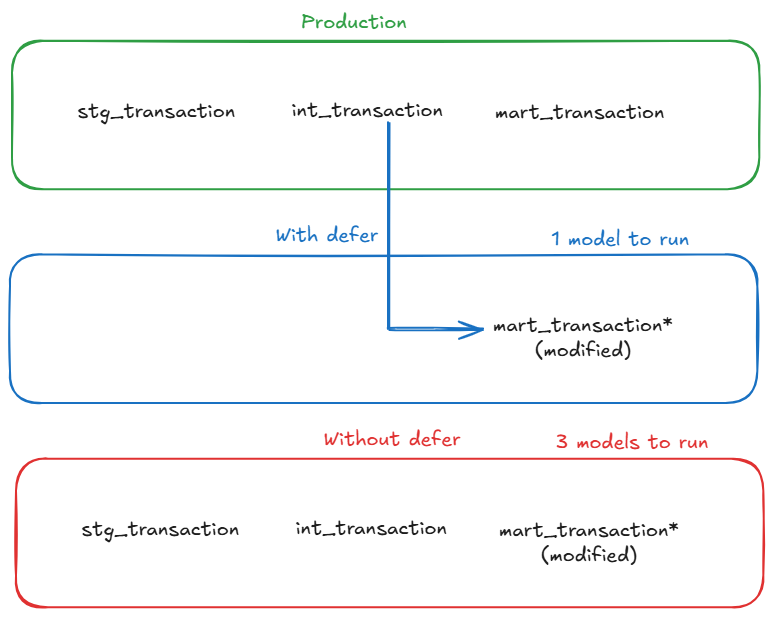

Introduction
When working with dbt in production, you’ve probably noticed that running full dbt build or dbt test commands in CI can be painfully slow and expensive. Every pull request triggers a complete rebuild of your entire dbt project, even if you’ve only modified a single model. This is where dbt’s defer feature comes in, a powerful mechanism that can dramatically reduce CI runtime and compute costs.
In this article, we’ll explore what dbt defer is, why it matters and how to implement it effectively in your CI/CD workflows.
What is dbt Defer?
dbt defer is a feature that allows you to reference tables and views from a previously completed dbt run instead of building them from scratch. In practical terms, when you run dbt with the --defer flag, it uses existing production (or any other environment) artifacts to skip building upstream models that haven’t changed, focusing only on the models you’ve actually modified.
Think of it like this: instead of rebuilding your entire house every time you want to change a lightbulb, you just change the lightbulb and trust that the rest of the house is already built correctly.
Why Use dbt Defer?
The benefits of using defer are compelling, especially for teams working with large dbt projects:
- Faster CI/CD Pipelines: Only build and test what’s changed, not the entire project
- Reduced Compute Costs: Less warehouse usage means lower cloud bills
- Quicker Feedback Loops: Developers get PR validation results faster
- Resource Efficiency: Your data warehouse isn’t unnecessarily processing unchanged models
In my experience working with energy trading systems and data platforms for clients, implementing defer correctly can reduce CI pipeline times by 60-80%. Even on smaller projects, you’ll see significant improvements, the demo repository I built shows a 75% reduction in build time (from 4 seconds down to 1 second for a single mart modification).
How dbt Defer Works Under the Hood
When you run dbt with the --defer flag, dbt compares your current project state against a manifest from a prior run (typically your production run). Here’s what happens:
- Manifest Comparison: dbt reads a manifest.json file from a previous run (usually production)
- Dependency Resolution: It identifies which models have changed and which are upstream dependencies
- Smart Selection: For unchanged upstream models, dbt references the existing tables/views instead of rebuilding them
- Targeted Build: Only the modified models and their downstream dependencies are rebuilt
The key file here is manifest.json, which contains metadata about every model in your dbt project, including their dependencies and compilation details.
The difference becomes much clearer visually:

With defer enabled, dbt reuses upstream models from production and only rebuilds the modified model. Without defer, the entire upstream chain must be rebuilt.
Setting Up dbt Defer: A Practical Guide
Prerequisites
Before implementing defer, ensure you have:
- A production dbt run that generates artifacts (
manifest.json) - A way to access these production artifacts in your CI environment
- dbt-core version 0.18.0 or later
Step 1: Generate and Store Production Artifacts
First, you need to capture the manifest from your production runs. In your production environment, after running dbt, the artifacts are stored in the target/ directory.
# In your production job
dbt build --target prod
# This generates target/manifest.jsonYou’ll want to store this manifest somewhere accessible to your CI jobs. Common approaches include:
Option 1: Cloud Storage
# Upload to S3, GCS, or Azure Blob Storage
aws s3 cp target/manifest.json s3://my-bucket/dbt-artifacts/manifest.jsonOption 2: Artifact Repository
# Some teams use artifact registries or even commit artifacts to a specific branch
git checkout artifacts
cp target/manifest.json prod-artifacts/manifest.json
git add prod-artifcacts/manifest.json
git commit -m "Update production manifest"
git pushStep 2: Configure Your CI Job
In your CI pipeline, you need to:
- Download the production manifest
- Run dbt with the defer flag
- Use state selection to only build modified models
Here’s an example GitLab CI configuration:
# .gitlab-ci.yml
dbt_ci_build:
stage: test
script:
# Download production manifest
- mkdir -p artifacts
- aws s3 cp s3://my-bucket/dbt-artifacts/manifest.json artifacts/manifest.json
# Install dbt
- pip install dbt-core dbt-postgres
# Run dbt with defer and state selection
- dbt build
--select state:modified+
--defer
--state artifacts
--target ci
only:
- merge_requestsLet’s break down these flags:
--select state:modified+: Selects models that have been modified and their downstream dependencies--defer: Tells dbt to use existing relations for unselected models--state artifacts: Points to the directory containing the production manifest.json--target ci: Uses your CI target configuration
dbt considers a node “modified” when its compiled SQL, config, materialization or dependencies differ from the previous manifest, not just when the file changes.
Step 3: Configure Your profiles.yml
Your CI target should point to a separate schema to avoid conflicts:
# ~/.dbt/profiles.yml
my_project:
target: dev
outputs:
dev:
type: postgres
host: localhost
user: dev_user
password: dev_password
port: 5432
dbname: analytics
schema: dev_schema
ci:
type: postgres
host: prod-host.example.com
user: ci_user
password: "{{ env_var('CI_DB_PASSWORD') }}"
port: 5432
dbname: analytics
schema: ci_pr_{{ env_var('CI_MERGE_REQUEST_IID') }} # Unique schema per PR
prod:
type: postgres
host: prod-host.example.com
user: prod_user
password: "{{ env_var('PROD_DB_PASSWORD') }}"
port: 5432
dbname: analytics
schema: productionNotice how the CI schema uses the merge request ID to create isolated schemas for each PR. This prevents conflicts between concurrent CI runs.
Understanding State Selection Operators
dbt provides several state selection operators that work with defer:
state:modified: Selects only models that have been modified
dbt build --select state:modified --defer --state artifactsstate:modified+: Selects modified models AND their downstream dependencies
dbt build --select state:modified+ --defer --state artifacts+state:modified: Selects modified models AND their upstream dependencies
dbt build --select +state:modified --defer --state artifacts+state:modified+: Selects the full lineage (upstream and downstream)
dbt build --select +state:modified+ --defer --state artifactsIn most CI scenarios, you’ll want state:modified+ to ensure downstream models are also tested.
Real-World Example: Before and After
Let me show you a concrete example from the demo repository I built for this article. The project includes:
- 7 staging models (views)
- 3 intermediate models (tables with complex joins and aggregations)
- 4 mart models (final analytics tables)
- ~200,000 rows of realistic e-commerce data
Before: Without Defer
Let’s say you want to modify only mart_daily_sales.sql to add a new metric.
# Full build in sandbox without defer
$ dbt build --target sandbox
# Output
Running with dbt=1.9.2
Found 14 models, 12 tests
Completed successfully
Completed in 0 hours 0 minutes and 3.97 secondsTotal runtime: 3.97 seconds
Even though you only changed one model, dbt rebuilt all 14 models because it doesn’t know what’s changed.
After: With Defer
Same modification, but now using defer:
# Build with defer - only modified models
$ dbt build --select state:modified+ --defer --state artifacts --target sandbox
# Output
Running with dbt=1.9.2
Found 14 models, 12 tests
Defer: True
State path: artifacts
1 of 2 START sql table model marts.mart_daily_sales ............ [RUN]
1 of 2 OK created sql table model marts.mart_daily_sales ....... [CREATE TABLE in 0.45s]
2 of 2 START sql table model marts.mart_marketing_campaigns .... [RUN]
2 of 2 OK created sql table model marts.mart_marketing_campaigns [CREATE TABLE in 0.32s]
Completed in 0 hours 0 minutes and 0.99 secondsTotal runtime: 0.99 seconds (75% faster!)
Notice how dbt only built 2 models instead of 14:
mart_daily_sales(the one you modified)mart_marketing_campaigns(depends on mart_daily_sales)
All other models were deferred to the production schema, saving significant time.
The Numbers
| Scenario | Without defer | With defer | Time saved |
|---|---|---|---|
| Single mart change | 3.97s (14 models) | 0.99s (2 models) | 75% |
| Intermediate change | 4.2s (14 models) | 2.1s (5 models) | 50% |
Even on this small local demo, the benefits are clear. On larger projects with cloud data warehouses, these savings scale dramatically - I’ve seen 20-minute CI runs drop to under 5 minutes.
Advanced defer Patterns
Pattern 1: Defer with Favor State
The --favor-state flag makes dbt prefer the production state over local modifications for upstream models:
dbt build --select state:modified+ --defer --favor-state --state artifactsThis is useful when you want to ensure your CI tests run against the exact same upstream models as production.
Pattern 2: Defer in Development
Defer isn’t just for CI — it can speed up local development too:
# Work on a single model without rebuilding everything
dbt build --select my_new_model+ --defer --state prod-artifacts/Pattern 3: Defer with Full Refresh
Sometimes you need to force a full refresh of certain models while still deferring others:
dbt build --select state:modified+ --defer --state artifacts --full-refreshCommon Pitfalls and How to Avoid Them
1. Stale Manifest Files
If your production manifest is outdated, defer won’t work correctly.
Solution: Automate manifest updates in your production pipeline:
# At the end of production runs
dbt build --target prod
aws s3 cp target/manifest.json s3://bucket/dbt-artifacts/manifest.json --cache-control max-age=3002. Schema Mismatches
If your CI schema differs from production, references might fail.
Solution: Ensure your CI target uses the same database but a different schema:
# profiles.yml
ci:
schema: ci_pr_{{ env_var('PR_NUMBER') }}
database: analytics # Same database as production3. Missing State Directory
Forgetting to download or specify the state directory:
# This will fail
dbt build --select state:modified+ --defer
# Error output
Runtime Error
dbt requires a valid state directory when using the 'state:' selector.Solution: Always specify --state and ensure the directory contains manifest.json:
dbt build --select state:modified+ --defer --state ./artifacts
ls -la ./artifacts/manifest.json # Verify it exists4. Incorrect state:modified Selection
Using just state:modified without the + suffix means downstream models won’t be tested:
# Wrong - downstream models aren't tested
dbt test --select state:modified --defer --state artifacts
# Correct - tests downstream dependencies too
dbt test --select state:modified+ --defer --state artifactsMonitoring and Debugging Defer
Checking What Will Be Built
Use dbt list to see what models will be selected:
# See what state:modified+ will select
dbt list --select state:modified+ --state artifactsExample output:
model.my_project.marts.fct_order_items
model.my_project.marts.metrics_daily_revenue
test.my_project.unique_fct_order_items_order_item_id
Understanding Defer Behavior
Enable debug logging to see defer in action:
dbt build --select state:modified+ --defer --state artifacts --debugLook for lines like:
Compiled node 'stg_users' is:
Using relation "analytics"."production"."stg_users" instead of building
This confirms dbt is deferring to existing production relations.
Integrating with Different CI Platforms
GitHub Actions
# .github/workflows/dbt-ci.yml
name: dbt CI
on:
pull_request:
branches: [main]
jobs:
dbt-ci:
runs-on: ubuntu-latest
steps:
- uses: actions/checkout@v3
- name: Setup Python
uses: actions/setup-python@v4
with:
python-version: '3.11'
- name: Install dbt
run: pip install dbt-core dbt-postgres
- name: Download production manifest
run: |
mkdir -p artifacts
aws s3 cp s3://my-bucket/manifest.json artifacts/manifest.json
env:
AWS_ACCESS_KEY_ID: ${{ secrets.AWS_ACCESS_KEY_ID }}
AWS_SECRET_ACCESS_KEY: ${{ secrets.AWS_SECRET_ACCESS_KEY }}
- name: Run dbt with defer
run: |
dbt build \
--select state:modified+ \
--defer \
--state artifacts \
--target ci \
--profiles-dir ./
env:
CI_DB_PASSWORD: ${{ secrets.CI_DB_PASSWORD }}
PR_NUMBER: ${{ github.event.pull_request.number }}Cost Analysis: Is Defer Worth It?
Let’s do some quick math based on typical data warehouse pricing (using Snowflake as an example for a larger production project):
Without defer:
- Average CI run: 20 minutes
- Warehouse size: Medium (4 credits/hour)
- Credits per run: (20/60) × 4 = 1.33 credits
- Snowflake credit cost: ~$3
- Cost per CI run: ~$4
- Runs per day: 15 (busy team)
- Monthly cost: 15 × 22 × 1,320**
With defer:
- Average CI run: 4 minutes
- Warehouse size: Medium (4 credits/hour)
- Credits per run: (4/60) × 4 = 0.27 credits
- Cost per CI run: ~$0.80
- Runs per day: 15
- Monthly cost: 15 × 22 × 264**
Savings: $1,056/month or 80% reduction
Note: The demo repository I built runs on local PostgreSQL (essentially free) but the time savings scale directly to cloud warehouses. A 75% reduction in runtime means a 75% reduction in compute costs, whether you’re running locally or on Snowflake/BigQuery/Redshift.
When NOT to Use Defer
Defer isn’t always the right choice. Skip it when:
- Full integration testing is required: If you need to validate the entire pipeline end-to-end
- Schema changes are involved: When you’ve modified source schemas, defer might miss dependencies
- Production artifacts are unreliable: If your production manifest isn’t consistently updated
- Very small projects: The overhead isn’t worth it for projects with <20 models
What defer does NOT do
Defer does NOT
- Validate upstream data correctness
- Protect you from breaking contracts
- Replace full builds in production
Conclusion
dbt defer is one of those features that, once you implement it properly, you’ll wonder how you ever lived without it. The combination of faster CI pipelines and significant cost savings makes it a no-brainer for teams working with dbt at scale.
In my freelance work with various data platforms, implementing defer has consistently been a good ROI optimization. It’s particularly impactful for teams with large dbt projects (100+ models) or high PR velocity.
Try It Yourself: Demo Repository
Want to see defer in action? I’ve created a complete demo repository that you can run locally to experience the performance gains firsthand.
Repository: github.com/p-munhoz/dbt-defer-demo
The demo includes:
- Complete PostgreSQL setup with Docker Compose (needs Docker)
- e-commerce data generator (10k customers, 50k orders)
- 14 dbt models across staging, intermediate, and mart layers
- Joins and aggregations to show real performance differences
- Step-by-step tutorial to demonstrate defer scenarios
You can clone it and have it running in under 5 minutes:
git clone https://github.com/p-munhoz/dbt-defer-demo.git
cd dbt-defer-demo
./quick_start.shThe README walks you through several scenarios showing defer in action, including the exact timings and performance comparisons I shared in this article.
🚀 Next Steps:
- Try the demo repository to see defer in action
- Implement defer in a non-production environment first to validate your setup
- Measure your current CI runtime and costs to establish a baseline
- Explore state-based selection beyond just CI (like production deployment strategies)
- Learn about dbt slim CI patterns for even more optimization